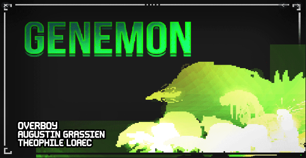

GENEMON ★
"Embody a Bio-hacker owning an High-Tech Genegun able to give rise to Genemons, some genetically modified creatures built up to struggle against some others and capable to fuse into new ones to fight into explosive underground arena battles."
MADE IN 3 DAYS FOR THE 32TH LUDUM DARE. Theme was "An Unconventional Weapon"
Out of 2800+ entries, the game came 8th Overall, 9th in Fun and 9th in Graphics
---INSTRUCTIONS----------------------------------------------------------
- Your goal is to crush the opponent's DNA tank with your Genemons.
- To load a some Genemons in your Genegun, just LEFT-CLICK once on a Genemon icon.
- Then, if your Genegun contains enough DNA, LEFT CLICK once again on the terrain in oder to spawn it.
- In their fierce battle, Genemons sometimes drop some DNA or Fusion Cells.
- MOUSE OVER these to collect them in your Genegun.
- Finally, if your Genegun contains enough Fusion Cells, trigger a Genevolution by DRAGGING AND DROPPING a Genemon icon onto another and a reveal a new Genemon.
- After each round, choose a new enhancement for your Genegun !


Comments
Log in with itch.io to leave a comment.
was angry at this game for no literal reason.
good game tho
Honestly really awesome game but it's way too easy to just spam through the whole thing. Hopefully the next update balances things a bit more.
i spammed my way through the game without any idea of what is was spawning and won. Overall this game is awesome :>
This game is very cool!
This game is 5 stars. I just wish that there were more genemon breeds even though there is no point in making them because you can just spam the apes, it helps when you have the upgrade that gives you three times the genemon.
love the game
or how put hak
no.
can i put hak
This game is amazing, but the meta is just spam lots of the Berngei (monkeys) and get the more level 1 upgrade, and you will never lose - (not even any point in fusing animals).
best game yet it's like pokemon but more brutal or smth
also could you add more mutations and like elementals only unlockable through beating the game
the game is a lot easier when you stop thinking and start spawning monkeys
thank you Overboy you are the best
thank you ! i'm glad you like this game :)
not just the game but all of your games are awesome
Thank you, it's motivating to read !
you're doing great ^^3
I'm a motivation machine XD
where has OVERBOY been my whole life
<3
agreed
❤
como lo descargo?
oOnu
i wanna be able to quickly swap between my little dudes
i wish the opponent didnt spawn so many at once
interesante para otras formas de juego
wished there was multiplayer
COOL
THICC TEXT
Reply to a reply to a reply
PLease make this downloadable
"You have awoken a sleeping giant" Me to the other team
OM SO GREAT
it was hard but i beat it
and i want more games like this but i don't think there are and if anybody finds games like this email me my email is greggljr@gmail.com so if u do find any email me and or reply to this
LOL
That OST gif took me counterclockwise from the frontman, then cracked me up. ツ
I really like the game and I would like if you please can make it a bit longer or some endless mode or something thank you and keep up the good games (cause I checked you got alot)
Great game! The biggest improvement I could see would be being able to select which genemon to spawn using hotkeys.
Really nice game.
PS Just catch a bug, failed spawning unit as the start move at the round and all the enemies start moving right. Next succesfull spawn fix the issue.
No, it's because your genegun isn't at 100%, only 80%, but you can get it at 100%.
Personally I go 100% genegun x3 tier 1's so i can just spam and it's fucking mayhem
Very cool! I wish there was a downloadable version for Windows. Also ability to play in browser with Full Screen mode would be nice.
Yeah this game is amazing, if there was a downloadable version thatd be so cool.
Great game, you should add more stuff
Amazing game. Absolutely loved every moment of it.
Cool game with good graphisms and styled monsters
Great game, I just wish the AI died;t just start with an army every time a match starts.
cool man
COOL
Nice game was a bit short but I liked the game well : 3
How do you evolve the monsters?
Oh, never mind. I figured it out.
soque ta radecori
u jogo ta legau
This is really good, I just wanna make all the monsters and watch them fight!